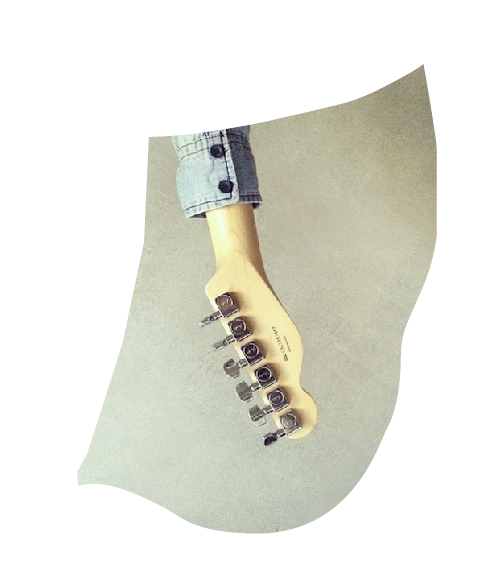

"Het creëert de 'ik' die op de sociale wereld wordt losgelaten".
Abstract Nederlands
Onderzoeksvraag: Hoe wordt het brein verbeeld?

De interesse in ons brein is ontstaan door mijn nieuwsgierigheid naar wie we zijn zoals we zijn. Waarom de één wel in staat is om creatief te zijn en de ander niet. Wat ons als individu onderscheid van iemand anders. We beseffen het niet iedere dag, maar in ons hoofd bevindt zich een verbazingwekkend arbeidsbesparend apparaat, dat iedere moderne technische uitvinding te boven gaat: ons brein. Door ons brein hoeven we niet iedere dag opnieuw te bedenken hoe we een beweging onder controle krijgen om onze omgeving opnieuw te verkennen. Voor ons brein zijn waarneming en actie zeer nauw met elkaar verbonden. We gebruiken ons lichaam om iets over de wereld te leren, we volbrengen hiermee allerlei taken en kijken dan wat er gebeurt. We nemen niet alleen de algemene en dubbelzinnige signalen waar die vanuit de buitenwereld onze ogen, oren en vingers beïnvloeden. Het is meer dan dat. Het creëert de 'ik' die op de sociale wereld wordt losgelaten en laat me toe mijn denkwereld met mijn vrienden te delen zodat we samen iets groters kunnen verwezenlijken dan wat ieder van ons afzonderlijk kan realiseren. Het zijn onze lichamelijke zintuigen die ons in staat stellen om in contact te komen met een voortdurend veranderende buitenwereld waarin wij dingen waarnemen op ieder zijn eigen manier.
We lijken de omgeving waarin we ons begeven te overzien. Uit de fysische eigenschappen van de mens blijkt echter hoe weinig men daadwerkelijk ziet. Zien bestaat voor een groot deel uit aannames, het verbinden en invullen van incomplete gegevens. Het brein is in die zin erg lui, weinig beelden zijn uit het heden afkomstig, een bekende omgeving is opgebouwd uit beelden uit het verleden. Ik beschouw mijn hersenen als een uiterst belangrijk aspect; namelijk het commandocentrum van waaruit mijn hele wezen, tot de kleinste lichaamsbeweging aan toe, bestuurd wordt. Onder de voorwaarden van het commandocentrum, het brein, beweegt het lichaam zich als één groot uitvoerend instrument. Ik identificeer me niet met mijn hersenen, maar ik zie ze als een beperkte afspiegeling van mijn wezen. Maar natuurlijk besef ik mij maar al te goed dat de structuur en de werking van mijn hersenen bepalend zijn voor hoe ik me in deze wereld manifesteer.
Het brein staat niet meer alleen in de belangstelling van neurowetenschappers, psychologen en biologen, maar ook van kunstenaars. Het is het brein dat nog zoveel onduidelijkheden met zich mee brengt maar daardoor zo inspirerend is om als ontwerper dit op een oorspronkelijke wijze in beeld te brengen terwijl neurowetenschappers alle kwabben en cellen tot op de allerkleinste nauwkeurigheid af gaan voor meer betekenis. Het is het brein dat ons nieuwsgierig houdt en uitnodigt om er iets mee te doen. Als ontwerper maakt het mij enorm nieuwsgierig naar hoe de verbeelding van het brein zich zal gaan ontwikkelen en hoe ik als ontwerper hier mee om zal gaan.
Abstract Engels
Research question: How are the brains visualized / represented?
The interest in our brain is created by my curiosity about the fact that we are as we are. Why is one of us capable to be creative and someone else is not? What does distinguish us, as an individual, from someone else? We do not realize it every day, but in our mind there is an amazing labor-saving device that every modern technological invention goes beyond: our brain. Because of our brain we do not have to think over again about how we get a motion under control to re-explore our environment. Perception and action are closely linked. We use our body to learn something about the world. Herewith, we fulfill a variety of tasks and we will see what happens. We do not only perceive the general and ambiguous signals which influences our eyes, ears and fingers from outside.
It’s more than that. It creates the ‘I’ which will be released to the social world and it allows me to share my thoughts with my friends. In this way, we can together achieve something greater than any of us could achieve separately. These are our senses which enable us to get in contact with the constant changing world, where we perceive things in our own way. We seem to assess the environment in which we are. However, the physical characteristics of human people actually show us how little we are aware of what we see. Seeing consists of a large part of assumptions, connecting and filling of incomplete data. In this sense, the brains are very lazy. Few images are from the present. A well known environment is structured from images from the past.
I consider my brain as an extremely important aspect. It is the command centre from which my whole being is controlled. Under the conditions of the command centre (the brain) the body moves as one big executive instrument. I do not identify myself with my brains, but I see it as a limited reflection of my whole being. Of course I do realize that the structure and the function of my brains are determinative of how I present myself to the world.
Not just neuroscientists, psychologists and biologists are interested in the brains. Artists and designers are interested as well. The brains do still have so much uncertainties, but it gives inspiration for a artist/designers to visualize it. Neuroscientists on the other hand, attend all cells to the smallest precision for more meaning. The brains keep us curious and invite us to do something with it. As a designer, it makes me very curious about how the imagination of the brains will develop and how I, as a designer, will deal with it.